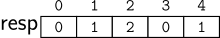

Soma
Imagine que estamos trabalhando com números inteiros grandes com até 100 dígitos. Neste caso, representamos esses inteiros grandes usando uma struct composta por um vetor de digitos e um inteiro tamanho para indicar a quantidade de dígitos atualmente.
typedef struct bigint {
int digito[100]; // vetor de dígitos
int tamanho; // número de dígitos usados
} bigint;
Sr. Boquinha é o dono de um bar famoso por suas habilidades únicas de cálculo. Ele tem um jeito peculiar de realizar somas: quando a operação resulta em um vai-um tradicional (carregar um valor adicional para o próximo dígito), ele sempre vai inverter o valor do vai-um para o maior dígito. Por exemplo: Em vez de calcular 6+9=15, o Seu Boquinha inverte o vai-um, resultando em 51.
Sua tarefa é, dado um bigint a e um bigint b armazene no bigint resp o resultado da soma dos dois inteiros a e b como Sr. Boquinha.
Por exemplo,
A variável bigint resp ficaria assim
